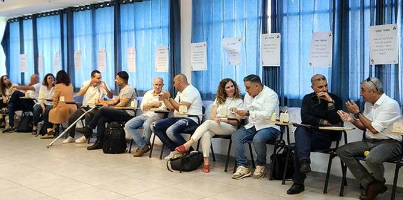
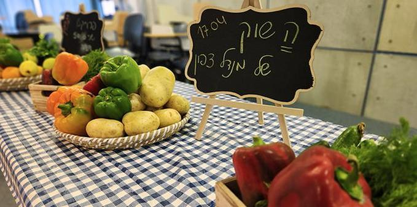
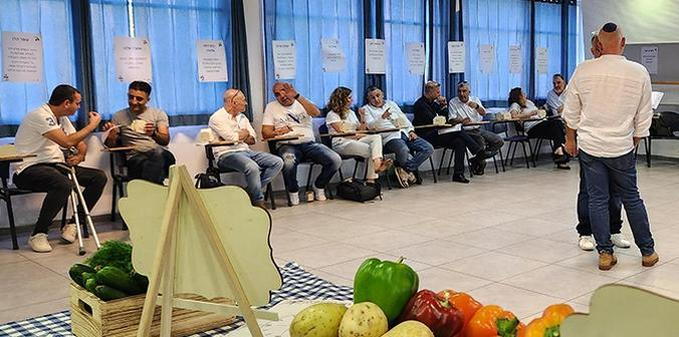

(צילום: דנה קליינמן)
אחד היעדים שנקבעו השנה במרכז מנדל למנהיגות בצפון היה חיזוק הקשר בין עמיתי תוכנית מנדל למנהיגות בשירות הציבורי בצפון לבין עמיתי תוכנית מנדל למנהיגות אזורית בצפון. זאת מתוך הבנה שזוהי הדרך הטובה ביותר להעמקת אחריות אזורית רב-מגזרית משותפת, באופן שיגביר את השפעתה של עשיית העמיתים בהווה ובעתיד: בהתאמה לאימפקט שמרכז מנדל למנהיגות בצפון מבקש להשיג.
שלב ראשון – חיבור צפוני (ח"צ)
צוותי שתי התוכניות, יחד עם מיכל רייקין, מובילת תחום אחריות צפונית משותפת במרכז מנדל למנהיגות בצפון, יזמו פרויקט משותף – חיבור צפוני (חצ). הפרויקט שם דגש על הקשר בין עמיתי התוכניות ומקצה לאורך השנה משבצות זמן להיכרות קבוצתית ובין-קבוצתית ולמפגשים עם בוגרי התוכניות משנים קודמות. בכך הפרויקט חושף את העמיתים לנכס המשמעותי ביותר שמרכז מנדל למנהיגות בצפון יכול להעניק להם – היכרות עם העשייה העכשווית המתקיימת בשטח והזדמנות ליצור שיתופי פעולה שיש להם פוטנציאל לסייע להם בהווה ובעתיד.
מטרה נוספת של פרויקט חצ היא לשרת את המהלכים מחוללי השינוי (ממ"ש) של העמיתים – תאוריות שינוי המוצעות כמענה אפשרי לאתגר או לבעיה שעמית או עמיתה מזהים בתחום אחריותם כמשרתי ציבור.
היות שעמיתי התוכניות והבוגרים מביאים עמם ניסיון אישי ומקצועי שאינו בהכרח מוכר וידוע לחבריהם, הגילוי שלו במסגרת המפגשים מייצר מאגר ידע עצום שיכול להצמיח את העמיתים ולתמוך בהם בשעה שהם ניגשים לחשיבה ולעבודה על המהלך מחולל השינוי האישי שלהם.
הקרבה והאמון בין העמיתים משתי הקבוצות החלו להיווצר במהלך חקר הצפון, תהליך שבמסגרתו הם חולקו לקבוצות מעורבות. כל אחת מהקבוצות עסקה באחד מארבעה נושאים והתנסתה בהיכרות עומק עם אזור הצפון ועם המאפיינים והאתגרים המרכזיים שלו.
 (צילום: דנה קליינמן)
שלב שני – שוק פרויקטים
עם סיום פרויקט חקר הצפון וההתמקדות במהלך האישי שכל עמית מבקש להוביל, הובילה מיכל רייקין את השלב הבא בתהליך המשותף לעמיתי שתי התוכניות: "שוק הפרויקטים" – אשר נועד להוסיף נדבך מקצועי לאחריות המשותפת שלהם לאזור צפון ולאפשר להם להתבונן במהלך מחולל השינוי שהם מובילים מנקודות מבט מגוונות ושונות.
על קירות חדר הלימוד נתלו כרזות כמספר העמיתים. כל כרזה נשאה את שמו של המהלך מחולל השינוי של העמית, ומתחתיה ניצבה קוביית עץ. העמיתים עברו בין הפרויקטים וכתבו על פתקיות רעיונות, תובנות, הצעות לציוות עם גורם רלוונטי וכל דבר אחר שיכול לדעתם לקדם את הפרויקט. הפתקיות הוכנסו לקופסת העץ, בתום הסבב פתח כל עמית את הקופסה שלו, עיין במתנות שהעניקו לו חבריו, וקבע שלוש פגישות שלדעתו יוכלו לתרום לו בהמשך.
התועלת שבעצות, הרעיונות והחיבורים שקיבלו העמיתים מחבריהם, בשילוב חשיבה יצירתית ששוק הפרויקטים הציג יסייעו להם גם לקדם את המהלך מחולל השינוי האישי שלהם וגם לנסות ולהשפיע על פעילותם העתידית באזור הצפון.
 (צילום: דנה קליינמן)
{kind=link}
{kind=link}
{kind=link}